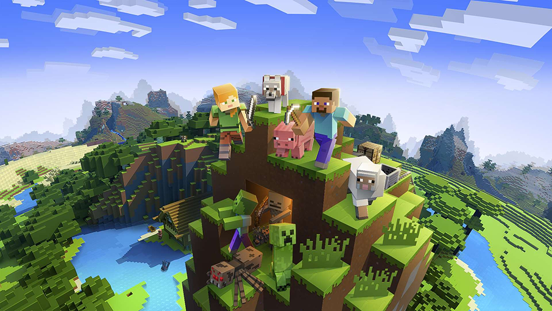
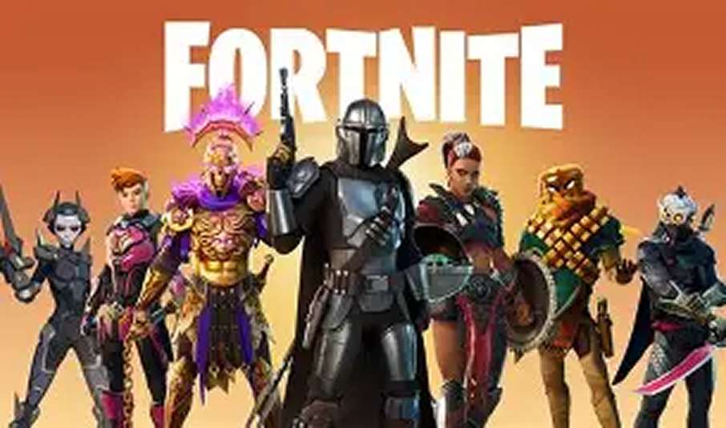
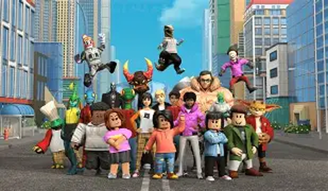
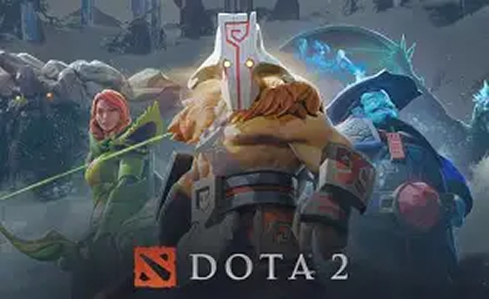
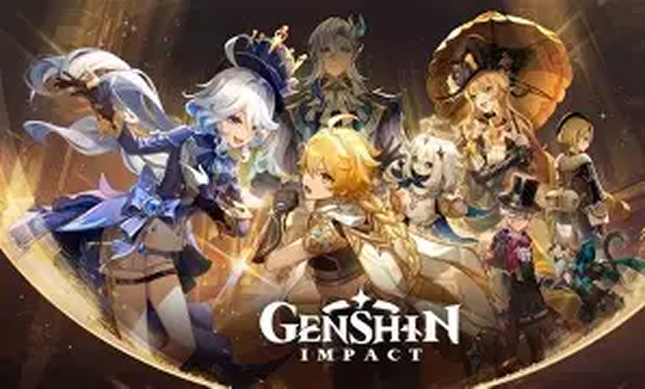

1.Minecraft
Майнкрафт это самая популярная игра в мире. У этой игры нету особой цели точнее говоря она дает разное направление игрокам. Вы можете иследовать мир, копаться в шахтах, путешествовать и многое другое. А точнее дает полный творческий прорыв
2.Fortnite
Фортнайт эта игра в которой тебя ждут эпические сражения. Смысл в том чтобы остаться выжившим среди 100 игроков. Вы также можете разблокировать новые оружия.Также предсуствует уникальная механика. Новые иследования ждут вас!
3.Roblox
Roblox представляет собой пользовательскую платформу для создания и распространения игр. Это виртуальная вселенная, которая позволяет создавать, делиться опытами с друзьями и быть кем угодно, кем сможете себе представить.
4.Dota2
Dota 2 – это не просто игра. Это целая вселенная, где стратегическое мышление, командная работа и индивидуальные умения сталкиваются, создавая уникальное игровое пространство. Выбор персонажей из более чем сотни уникальных героев. Захват и контроль карты, включающей леса и линии. Собирание золота и опыта для улучшения своих персонажей. Динамическое взаимодействие с союзниками и противниками.
5.Genshin Impact
Представь себе, что ты находишься в удивительном мире Тейвата, полном магии, загадок и невероятных приключений. Именно здесь и начинается наше захватывающее путешествие в игре : Genshin Impact — это не просто игра, а целый мир, наполненный приключениями, загадками и уникальными персонажами.